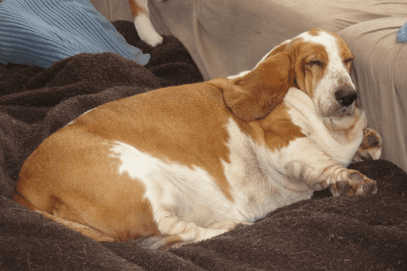

Contextualização o capitulo 1 começa como filhote de cachorro que é adotado por um menino chamado Ethan. A relação entre eles e cheia de amor. O cachorro aprende rapidamente sobre lealdade, carinho e as necessidades básicas da vida. A história é contada do ponto de vista do animal, o que faz o com que nós que ta lendo se conectar com suas emoções e experiências de forma única. Esses capítulos mostram o início da jornada do cachorro e o vínculo especial que ele tem com seu dono.
